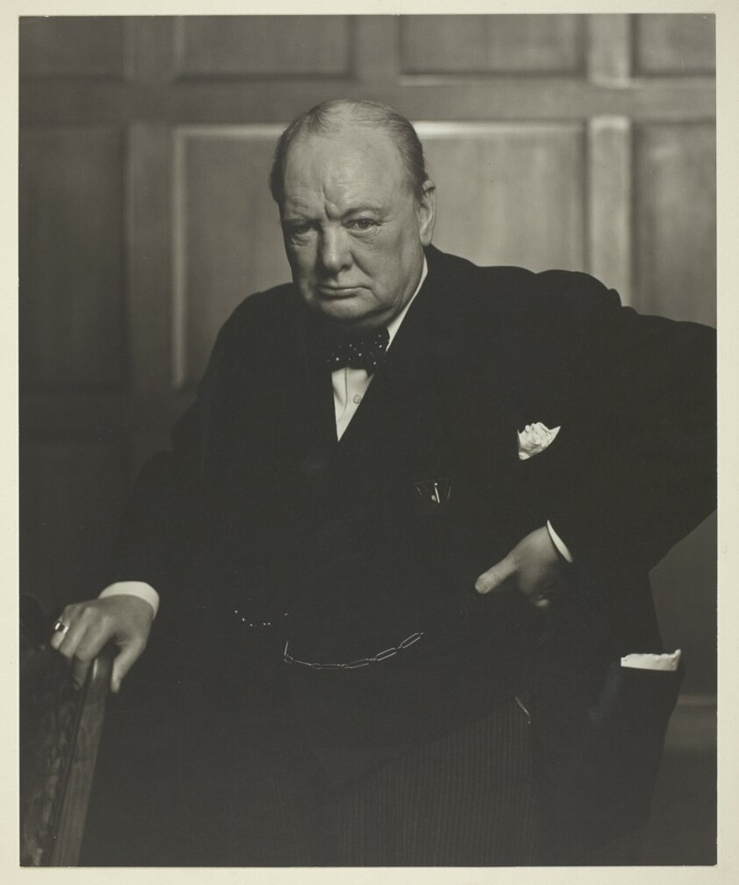

Sir Winston Churchill
Yousuf Karsh · 1941 · Gelatin silver print · 41.4 × 34 cm (image/paper) · Art Institute of Chicago
In copyright. Look and learn: shown for study, not for download.
Yousuf Karsh took this on 30 December 1941 in the Speaker's Chamber of the Canadian House of Commons in Ottawa, just after Churchill had addressed the members of parliament. The session was meant to last two minutes, and the camera was an 8 by 10 inch view camera. Churchill refused to put down his cigar, so Karsh stepped forward and took it out of his mouth before making the exposure. Life bought one-time use of the picture for $100 and ran it on its cover in May 1945. Churchill was sixty-seven.